Todas las funciones de Motoseyir
Esta página crece. Cuando llega una función nueva, se añade primero aquí, bajo el título que le toca. Abajo hay cuatro grupos: ciudad y mensajería, mototurismo, en carretera y después de la ruta, y rodar juntos.
Para la ciudad y la mensajería
Ruta más corta
Un navegador normal te da la carretera más rápida para un coche. En moto lo que te desgasta no son los minutos, son los kilómetros. Motoseyir compara varias alternativas entre los mismos dos puntos y propone la más corta, aunque tarde algo más. En la navegación paso a paso tienes mapa que sigue de cerca, indicaciones de giro, distancia restante y hora de llegada.
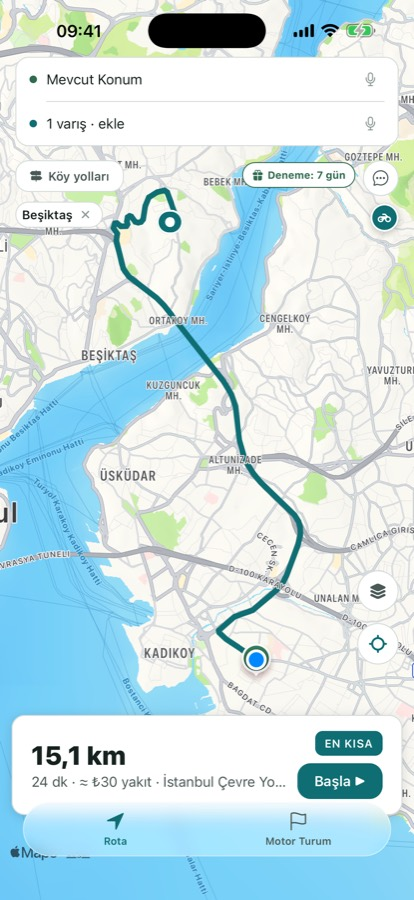
El mejor orden de las paradas
Marcas varios puntos de entrega en el orden que quieras y «Best order» los recoloca todos para la distancia total más corta. Sobre la ruta está escrita también la hora a la que llegarás a cada parada. Las dos capturas de abajo son de una ruta real: las mismas cuatro paradas en Estambul, 57,1 km en el orden del motorista y 46,9 km en el que encontró Motoseyir. Más de diez kilómetros de diferencia.
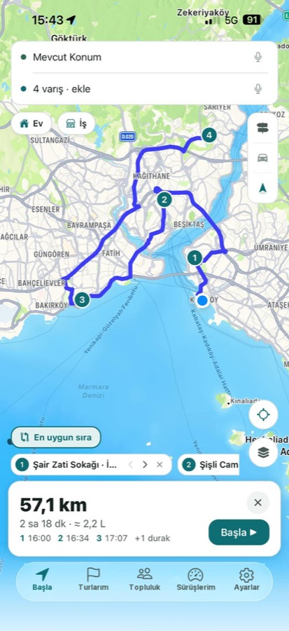
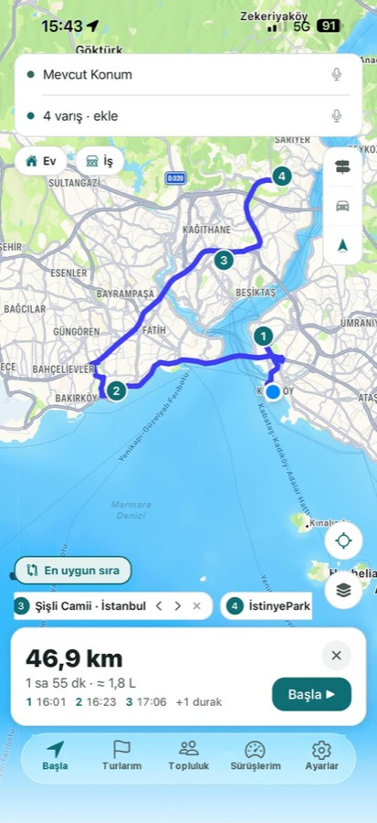
Coste de combustible
El coste estimado de combustible lo ves antes de salir, calculado en la unidad de tu país: litros a los 100 km en Europa, galones y mpg en Estados Unidos, con precios locales. El consumo y el precio los introduces en Settings → Riding; el informe de ahorro se calcula con esos dos valores.
Para el mototurismo y las salidas de fin de semana
Modos de carreteras secundarias, costa y enduro
En el modo de carreteras secundarias la ruta se calcula en el servidor propio de Motoseyir, que usa los enlaces de valle y los caminos asfaltados que un mapa normal se salta. De Ayder a Hemşin salen así 24,1 km; los mapas generales muestran 49,9 km entre los mismos dos puntos. El modo costa mantiene la ruta junto al mar con el mismo servidor, y el modo enduro busca pistas de tierra y grava. El modo se cambia con el botón de arriba a la izquierda en la pantalla del viaje.
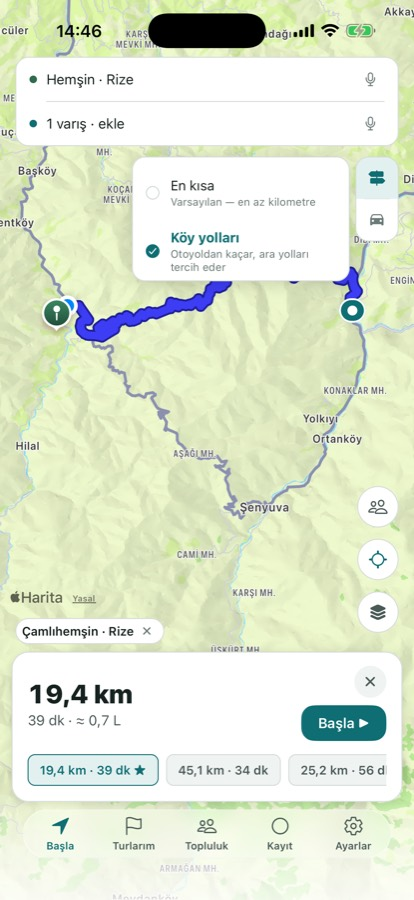
Rutas legendarias listas para rodar
De los Alpes: Großglockner Hochalpenstraße, Passo dello Stelvio, Furka–Grimsel–Susten, Sellaronda, Timmelsjoch, Col du Galibier. De Turquía: Şile–Ağva, la D400 licia, Assos–montes Kaz, Nemrut, Sapanca–Maşukiye–Kartepe. Y siete clásicos estadounidenses: Tail of the Dragon, Cherohala Skyway, Blue Ridge Parkway, Beartooth Highway, Angeles Crest, Big Sur y Million Dollar Highway. Al abrir una, se copia en tus propios viajes con sus paradas y su trazado.
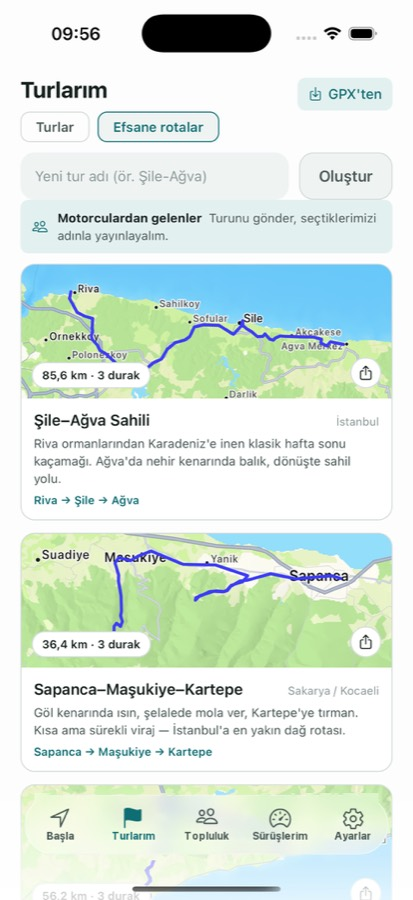
Discover: lugares junto a la ruta
Lista las calas, los campings y los sitios para comer alrededor de tu ruta. Miras la valoración y la distancia a tu trazado y añades como parada el que te gusta. Al tocar un lugar, su ubicación, su valoración y una descripción breve caben en una pantalla.
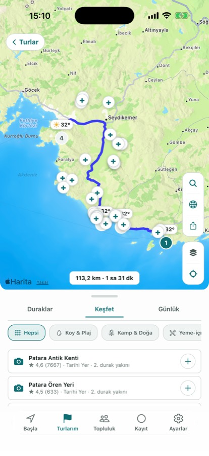
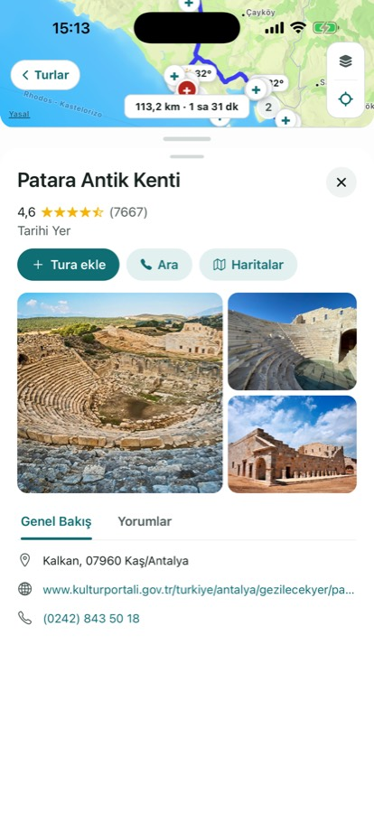
Diario de viaje
El viaje lo construyes con paradas; cuando llegas a una, esa parada se anota sola en el diario y tú añades una foto y una nota corta. Una parada admite hasta tres fotos, y las fotos aparecen como tarjetas en el mapa del viaje. No se borran ni aunque empieces el viaje de nuevo. El diario se queda en el dispositivo; si eliges compartirlo en Community van tres fotos como máximo, y eliges tú cuáles.
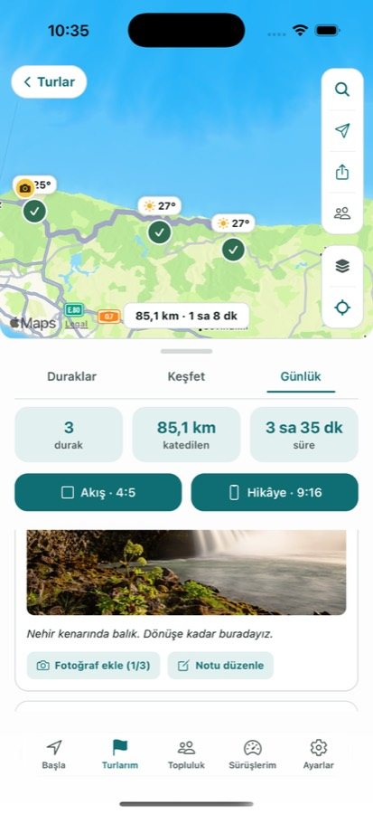
Tracks y GPX
Importa un archivo GPX y el track cae en la pestaña Trail; un viaje que llega con el código de un amigo cae en la pestaña Tours. Mientras la pestaña Trail está vacía explica para qué sirve y ofrece un track de ejemplo para tu región. También puedes convertir una de tus grabaciones en track y exportarla como GPX.
En carretera y después de la ruta
Aviso de lluvia en la ruta
Si se espera lluvia en tu ruta, avisa por adelantado para la hora a la que vas a estar allí, parada por parada. Si el tiempo está seco, no aparece nada en pantalla.
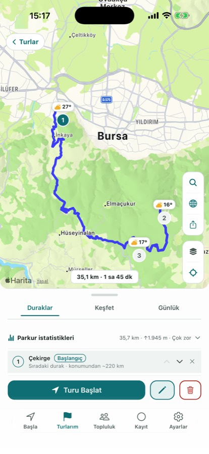
Grabación de rutas y estadísticas del track
La grabación sigue con la pantalla apagada y el track se colorea según la velocidad; el tiempo de parada se cuenta aparte y las pausas largas cierran un segmento solas. En marcha arrancas la grabación con el botón de la navegación y la cierras con el mismo botón. Una ruta terminada puedes enviarla a tu grupo, convertirla en track o exportarla como GPX. De un track calcula la distancia, el desnivel acumulado y la pendiente máxima, y al deslizar el dedo por el perfil de altitud el punto se mueve por el mapa. Si el archivo no trae altitud, se calcula desde un modelo del terreno.
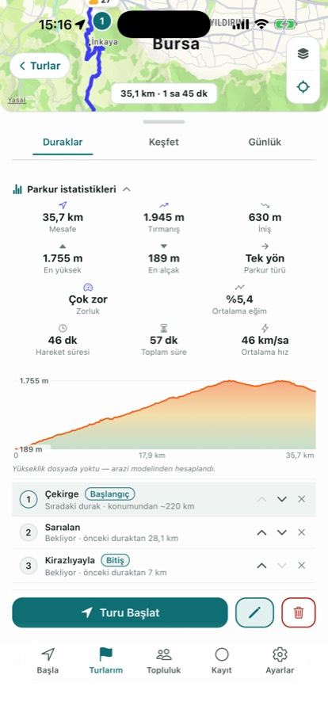
Guía por voz
Las indicaciones de giro las dice la voz de tu teléfono en el idioma de la app; con la app en turco vienen de una voz humana grabada, regrabada en la última actualización. La distancia sigue tu región: kilómetros en Europa, millas y pies en Estados Unidos («en 500 pies gira a la derecha»), millas y yardas en el Reino Unido.
Gira el teléfono
Con el teléfono en horizontal, las tarjetas y las listas se agrupan a la izquierda y el mapa se queda con el resto. En navegación, la banda de maniobra y la tarjeta de llegada están a la izquierda y el mapa a la derecha; la lista de viajes pasa a dos columnas. En los soportes anchos que van sobre el depósito, esa disposición cuadra mejor.
Rodar juntos
Salidas en grupo
Cuando alguien crea un grupo se genera un único código (por ejemplo A3K9MZ7P); todos entran con ese código y se ven unos a otros sobre la ruta. La ubicación solo se comparte mientras hay una grabación o navegación en marcha, y al terminar se borra del servidor. Entrar es gratis; crear un grupo necesita Pro. Cuando un miembro abre una ruta con Start, esa misma ruta llega a los demás, que la abren en su pantalla con un toque.
El panel del grupo se simplificó en la última actualización: código arriba, personas primero y ajustes abajo. El botón de grupo indica cuándo está activo compartir, y una parada añadida a la ruta queda marcada en el mapa.
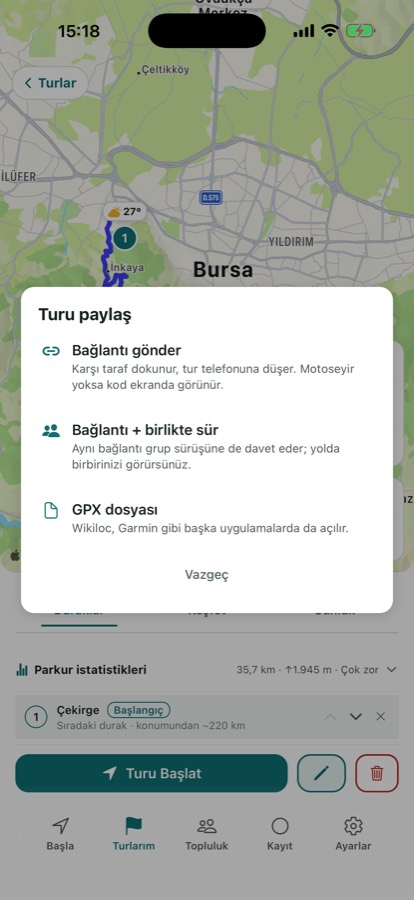
Invitar a rodar
En «My Ride Group», «Invite to ride» junto a una persona envía tu ruta y un enlace de voz con un toque. Quien la recibe elige «Ride the same route» y abre el mismo trazado en su teléfono, o «Riding behind you» y se conecta solo al audio. Sin códigos que escribir y sin pantallas que compartir.
Intercomunicador por internet
Mientras se rueda una ruta de grupo, el intercomunicador pregunta una vez; al aceptar, el audio solo llega a tu grupo. Sin ruta también puedes arrancarlo a mano. Al tocar la pastilla del intercomunicador en navegación silencias tu propio micrófono; el botón del altavoz en la lista de miembros silencia a un motorista solo en tu oído, mientras el resto del grupo sigue oyéndolo. Conecta el casco o los auriculares por Bluetooth y el audio pasa por ahí. En nuestro servidor no se graba nada: el audio solo llega a quien está en la sala en ese momento, y la sala se cierra al terminar la navegación o cuando la cierras tú.
Rutas en el grupo y feed de Community
Cuando envías una ruta terminada a tu grupo, el track, la distancia y el tiempo se quedan allí 14 días; unos 400 metros cerca de la salida y la llegada no se envían nunca. Una grabación enviada la retiras cuando quieras. El feed de Community, en cambio, es público: un viaje compartido aparece con su nombre, sus paradas, su distancia, su tiempo y tu nota, y se puede comentar y marcar como favorito. Las publicaciones pasan por una revisión antes de salir, el feed se puede filtrar por país y puedes retirar una publicación, un comentario o tu cuenta cuando quieras.
Pronto: AI CoRider — un copiloto con el que hablas dentro del casco. Todavía no está en la versión del App Store; llegará a Pro en una actualización posterior.